A state distribution that stays flat across time is ambiguous evidence. It is equally consistent with a cohort in which nobody moves and a cohort in which everybody swaps places, because both leave the same number of students in each state at each moment. The engagement data turn out to be the second kind: the share of disengaged students stays between a fifth and a quarter of the cohort at every one of the eight course positions, yet almost a third of consecutive observations are a change of state. Nothing in a distribution plot, and nothing in a sequence plot sorted by similarity, separates those two worlds.
flow_plot() closes that gap. It draws the movement
itself — how many students leave each state, and which state they arrive
in — using cograph for
the rendering, and transition_plot() collapses the same
movement into a network whose node sizes come from
Nestimate’s transition-network centralities. This vignette
is the third in the series: vignette("get-started") covers
the interface, vignette("vasstra-tutorial") runs the
complete analysis, and this one covers the views that answer where
movement goes, in this order:
- Why flows need their own view.
- Aggregated flows: the alluvial.
- Individual flows: one line per student.
- Flows inside a single trajectory.
- Controlling colour, bundling, and layout.
- The transition network: movement collapsed over time.
| Question | View |
|---|---|
| What is the mix at each time? | plot(fit, which = "sequences", type = "distribution") |
| Who resembles whom? |
plot(fit, which = "sequences") (heatmap) |
| Where does movement go? | flow_plot(fit) |
| Which students move where? | flow_plot(fit, type = "individual") |
| How does one trajectory move? | flow_plot(fit, group = ...) |
| Which states attract movement overall? | transition_plot(fit) |
| The same, as numbers | transition_centrality(fit) |
library(VaSStra)
data("engagement", package = "VaSStra")
fit <- vasstra(
engagement,
state_labels = c("Disengaged", "Average", "Active"),
dissimilarity = "lcs",
cluster_method = "ward.D2",
trajectory_labels = c(
"Mostly active",
"Mostly average",
"Mostly disengaged"
),
positive_states = "Active",
negative_states = "Disengaged"
)
#> Using n_states = 3 to match the supplied labels.
#> Using n_trajectories = 3 to match the supplied labels.
#> Registered S3 method overwritten by 'Nestimate':
#> method from
#> print.mcml cograph1. Why flows need their own view
The transition table is the numeric form of the same information, and it already shows why the flat distribution is misleading.
summary(fit$sequences)
#> position time state count proportion
#> 1 1 1 Disengaged 35 0.2464789
#> 2 2 2 Disengaged 35 0.2464789
#> 3 3 3 Disengaged 36 0.2535211
#> 4 4 4 Disengaged 27 0.1901408
#> 5 5 5 Disengaged 31 0.2183099
#> 6 6 6 Disengaged 35 0.2464789
#> 7 7 7 Disengaged 35 0.2464789
#> 8 8 8 Disengaged 32 0.2253521
#> 9 1 1 Average 70 0.4929577
#> 10 2 2 Average 62 0.4366197
#> 11 3 3 Average 67 0.4718310
#> 12 4 4 Average 78 0.5492958
#> 13 5 5 Average 70 0.4929577
#> 14 6 6 Average 69 0.4859155
#> 15 7 7 Average 64 0.4507042
#> 16 8 8 Average 71 0.5000000
#> 17 1 1 Active 37 0.2605634
#> 18 2 2 Active 45 0.3169014
#> 19 3 3 Active 39 0.2746479
#> 20 4 4 Active 37 0.2605634
#> 21 5 5 Active 41 0.2887324
#> 22 6 6 Active 38 0.2676056
#> 23 7 7 Active 43 0.3028169
#> 24 8 8 Active 39 0.2746479
fit$sequences$transitions
#> from to count probability
#> 1 Disengaged Disengaged 156 0.666666667
#> 2 Average Disengaged 73 0.152083333
#> 3 Active Disengaged 2 0.007142857
#> 4 Disengaged Average 73 0.311965812
#> 5 Average Average 335 0.697916667
#> 6 Active Average 73 0.260714286
#> 7 Disengaged Active 5 0.021367521
#> 8 Average Active 72 0.150000000
#> 9 Active Active 205 0.732142857Two facts drive everything below. First, persistence is high but far from total: 696 of the 994 consecutive pairs stay put, so 30 percent are moves. A distribution plot renders those 298 moves as a flat band, because they cancel — 73 students leave Disengaged for Average while 73 travel the other way, and 72 move up from Average to Active against 73 coming back down. The composition is stable precisely because the exchange is balanced, which is a different claim from stability and has different consequences for anyone designing an intervention.
Second, the corners of the table are nearly empty. Only 5 of 994 transitions run from Disengaged straight to Active, and only 2 run the other way. Movement between the extremes essentially always passes through Average, which makes the middle state a waypoint rather than merely an intermediate label. That is a structural claim about the state system, and it is the kind of thing the eye reads instantly from a flow diagram and slowly from a nine-row table.
2. Aggregated flows: the alluvial
flow_plot() draws one band per transition, with band
width proportional to the number of students making it, at every
consecutive pair of time points at once.
flow_plot(fit)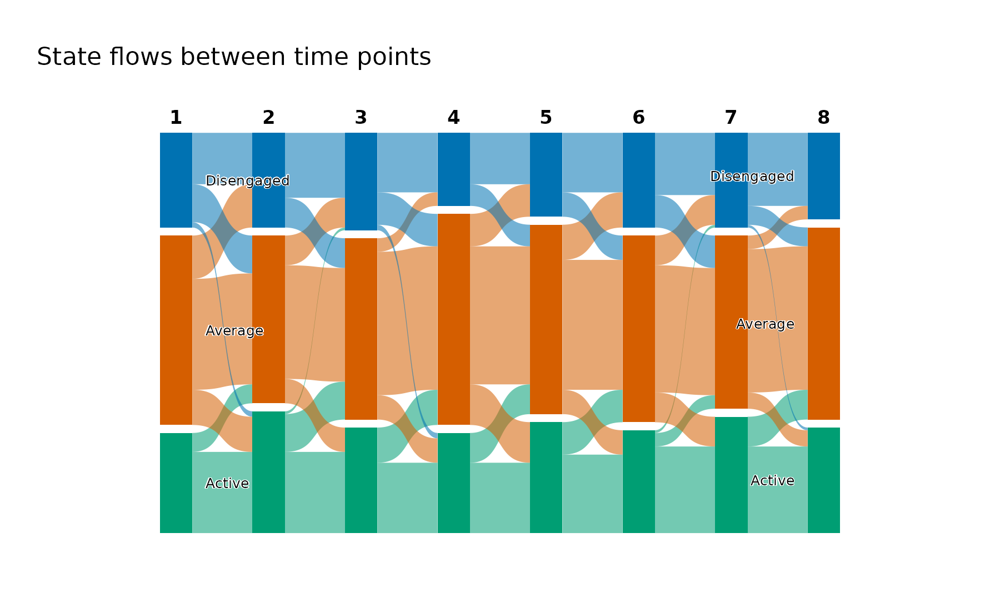
The near-absent corner transitions appear as the missing bands: only hair-thin threads cross the full height of the figure between the top block and the bottom one, against the substantial ribbons joining each block to its neighbour. The balanced exchange appears as the criss-cross between neighbouring states, which is thick in both directions at every step and leaves the block heights almost unchanged from column to column. Read together with the transition table, the picture supplies the shape and the table supplies the counts.
Bands are coloured by the state they leave, which is what makes the outflow of a single state followable across the whole figure. Colouring by destination answers the mirrored question — which state a given block recruits from — and is one argument away.
flow_plot(fit, color_by = "destination")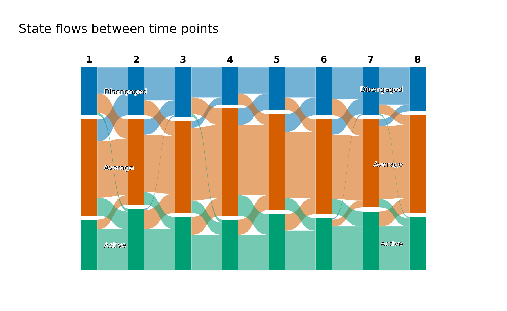
The colours, the state order, and the time labels come from the fit, so this figure and the sequence heatmap from the tutorial can be placed side by side without re-reading a legend.
3. Individual flows: one line per student
Aggregated bands merge students who move together. The individual view keeps them apart, drawing one line per student coloured by the state they started in, which turns the question from how much flow into whose.
flow_plot(fit, type = "individual")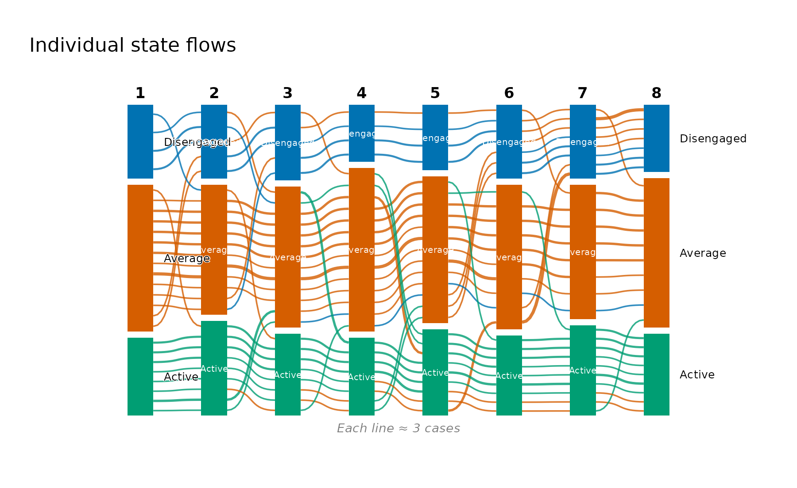
Colouring by first state makes early position followable to the end: the green lines beginning in Active stay largely within the lower band, while the orange lines that begin in Average are the ones ranging across the full height of the figure. This is the visual counterpart of the trajectory description’s mobility columns — the Average-heavy group records 2.33 transitions per student against 1.83 and 1.89 for the two extreme groups, and here that difference is the visible fanning of the orange lines.
With 142 students the lines would overplot, so
flow_plot() bundles them by default and annotates the
figure with how many students one line represents. Setting
bundle = FALSE draws every student, which is worth doing
for small cohorts and rarely worth doing for large ones.
flow_plot(fit, type = "individual", color_by = "last")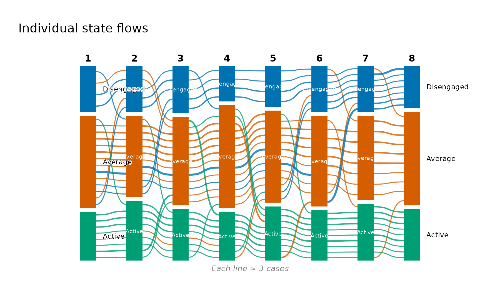
Colouring by the final state instead reverses the reading: it traces where each of today’s groups came from, which is the useful direction when the outcome is known and the question is what preceded it.
4. Flows inside a single trajectory
The trajectories are defined by whole-sequence similarity, so the
natural follow-up is whether a trajectory is internally uniform or
merely averages to its label. Flow diagrams draw a single panel and
cannot be faceted, so group restricts the plot to one
trajectory’s students.
flow_plot(fit, group = "Mostly average", type = "individual")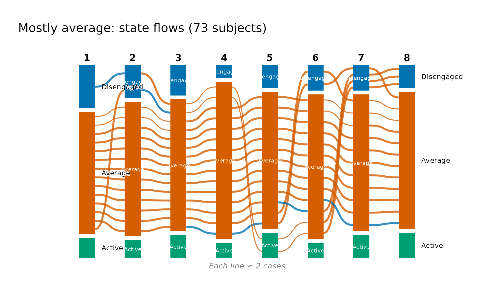
The label survives the check: the group is overwhelmingly a single orange band, with a thin blue thread of excursions into Disengaged and a small Active block that never grows. Its mean within-trajectory distance is the largest of the three (4.96 against 4.26 and 3.86), and this is what that looseness looks like — not a mixture of different journeys, but one journey with the most frequent small departures from it.
flow_plot(fit, group = "Mostly disengaged")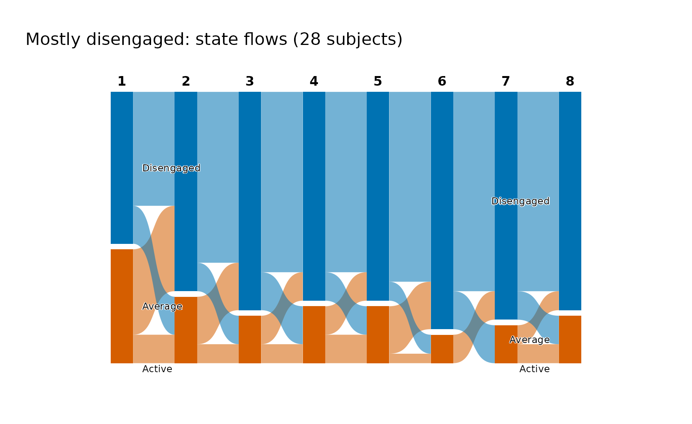
The most disengaged group is the tightest, and its aggregated flows show why: the Disengaged block absorbs nearly everything at every step, with its negative exposure of 0.82 and integrative potential of exactly zero meaning no student in this group is in the Active state at the end. The contrast with the previous figure is the substantive result — these trajectories differ in their movement, not only in their average level.
as.data.frame(fit, unit = "trajectory")
#> trajectory n proportion mean_within_distance n_observed unique_states
#> 1 Mostly active 41 0.2887324 4.258537 8 1.878049
#> 2 Mostly average 73 0.5140845 4.961187 8 1.986301
#> 3 Mostly disengaged 28 0.1971831 3.857143 8 1.821429
#> transitions entropy complexity volatility integrative_potential
#> 1 1.829268 0.4189906 0.3251220 0.4436702 0.7696477
#> 2 2.328767 0.4736884 0.3865300 0.4973907 0.1149163
#> 3 1.892857 0.3978570 0.3246998 0.4387755 0.0000000
#> negative_exposure
#> 1 0.009485095
#> 2 0.131659056
#> 3 0.8204365085. Controlling colour, bundling, and layout
flow_plot() sets the palette, the state order, the time
labels, and a readable geometry, and passes anything else through to
cograph, so a figure destined for a manuscript can be tuned without
abandoning the wrapper.
flow_plot(
fit,
main = "Engagement flows across eight course positions",
colors = c("#B3B3B3", "#4C9BE8", "#0B5394"),
flow_alpha = 0.75,
threshold = 3
)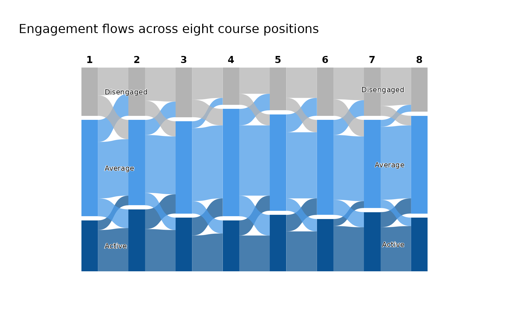
colors takes one colour per state in state order and
applies to everything the figure draws, so a custom palette stays
consistent between nodes and bands — here an ordered grey-to-navy ramp,
which suits an ordered state system better than the categorical
default.
threshold suppresses flows below a given number of
students, and this data set makes the choice unusually easy to defend.
Counted step by step, the corner transitions between Disengaged and
Active never exceed two students, while the smallest transition between
neighbouring states is five. A threshold of three therefore removes
every corner transition and retains every neighbouring one, which is why
the criss-cross survives intact above while the hair-thin diagonals are
gone. Thresholds chosen without that check will quietly delete real
movement, so it is worth reading the transition table before setting
one.
Two arguments are specific to the individual view.
bundle sets how many students one line represents —
"auto" by default, FALSE for every student, or
a number — and bundle_max sets the number of lines that
triggers automatic bundling.
flow_plot(
fit,
group = "Mostly disengaged",
type = "individual",
bundle = FALSE
)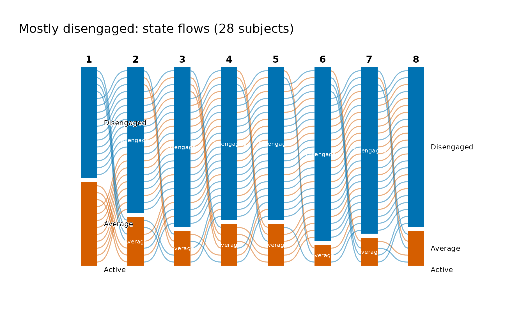
6. The transition network: movement collapsed over time
Every view so far keeps time on the horizontal axis. Collapsing all
seven steps into one network drops the timing and asks a different
question: across the whole course, which states attract movement and
which emit it? transition_plot() builds that network with
Nestimate::build_tna(), takes its centralities from
Nestimate::net_centrality(), and hands the result to
cograph::splot(), which recognises the network and supplies
the TNA styling, the labels, and the rings showing each state’s initial
probability. Node size is in-strength — the total incoming transition
weight — so the biggest node is the state the cohort most often moves
into.
transition_plot(fit)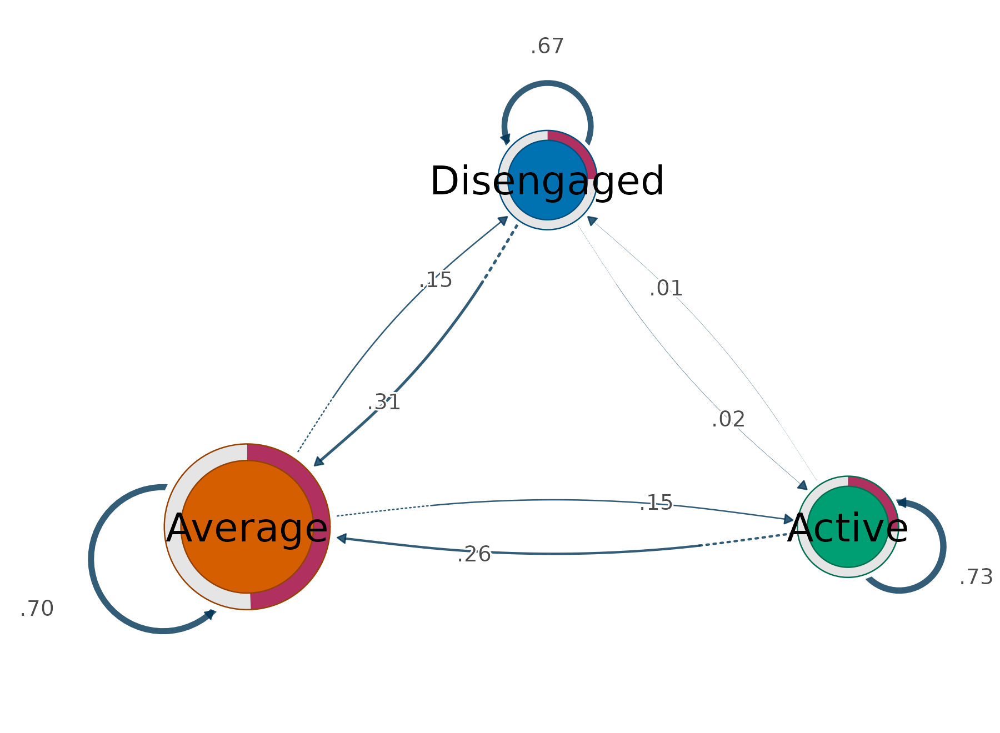
The same centralities are available as a table without drawing anything, which is what makes the size comparison checkable rather than impressionistic.
transition_centrality(fit)
#> state InStrength OutStrength
#> 1 Active 0.1713675 0.2678571
#> 2 Average 0.5726801 0.3020833
#> 3 Disengaged 0.1592262 0.3333333Average’s in-strength of 0.57 is more than three times either extreme, and that single number is the quantitative form of the waypoint result from section 1: movement does not merely pass through Average, it accumulates there. The two extremes are almost indistinguishable on this measure (0.159 against 0.171) even though their self-transition probabilities differ noticeably (0.67 for Disengaged against 0.73 for Active), because in-strength excludes self-loops by default. Persistence and attraction are genuinely different properties, and keeping them apart is the reason for that default.
Setting loops = TRUE folds persistence back in, and the
ordering changes character entirely — the nodes become nearly equal in
size because every state mostly retains its own members.
transition_plot(fit, loops = TRUE)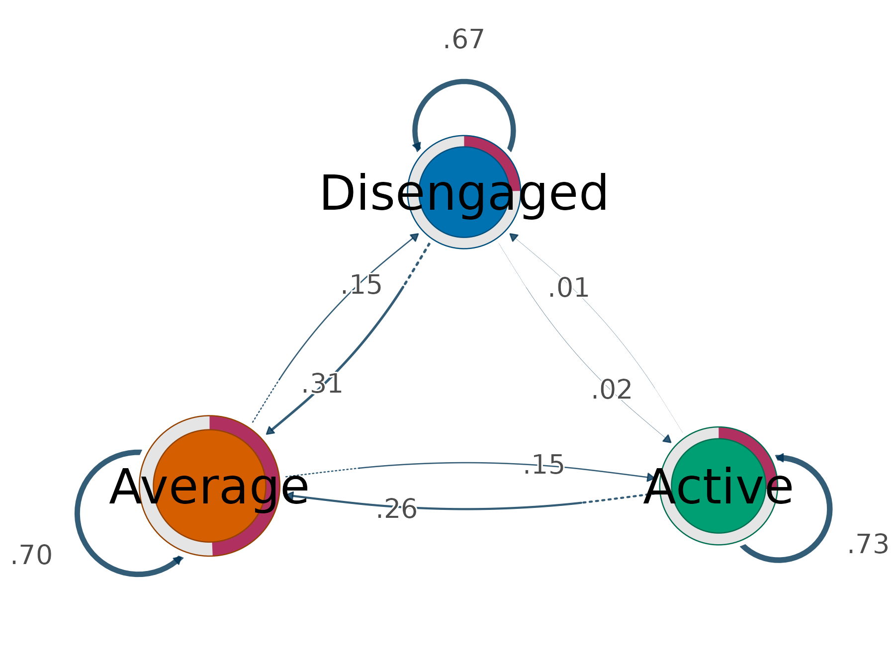
weights = "count" swaps transition probabilities for raw
counts, which is the version to report when the absolute volume of
movement matters rather than its conditional likelihood, and
size accepts any measure
Nestimate::net_centrality() offers —
measures = "all" on transition_centrality()
lists them.
transition_plot(fit, weights = "count", size = "OutStrength")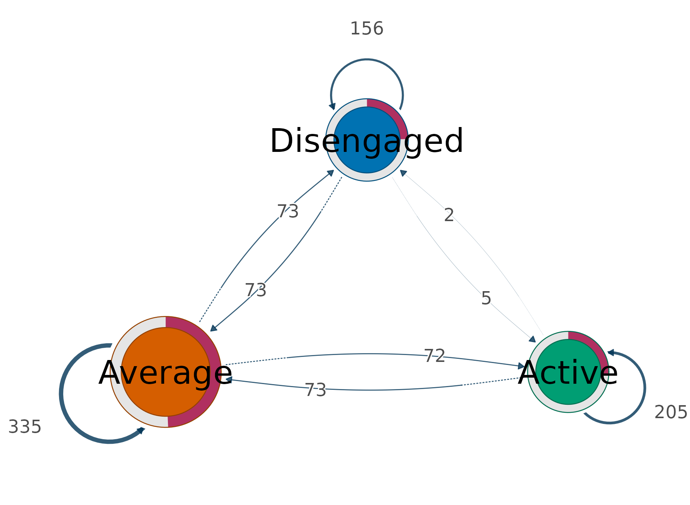
Restricted to one trajectory, the network becomes a compact summary of how that group moves — and a group that never reaches a state simply has no node for it.
transition_plot(fit, group = "Mostly disengaged")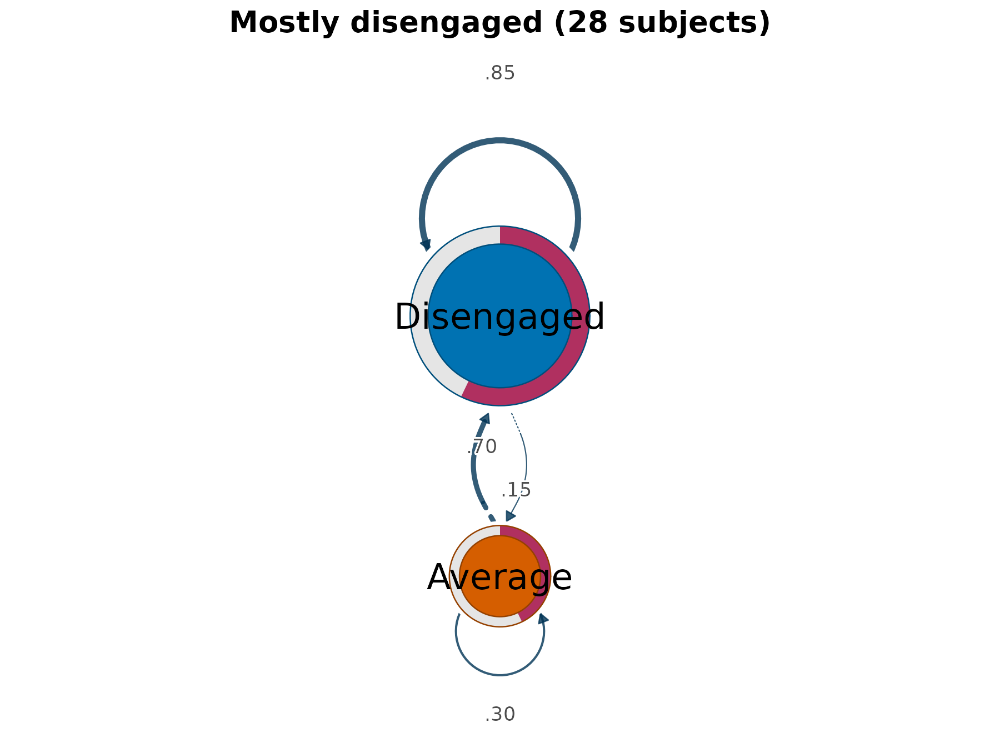
Sequences and network side by side
The network summarises movement but hides the data it came from, so
the conventional presentation puts the two together: the raw sequences
on the left, their transition network on the right.
sequences = TRUE draws both on one device, and because the
panels share a palette a state has the same colour in each.
transition_plot(fit, sequences = TRUE, group = "Mostly active")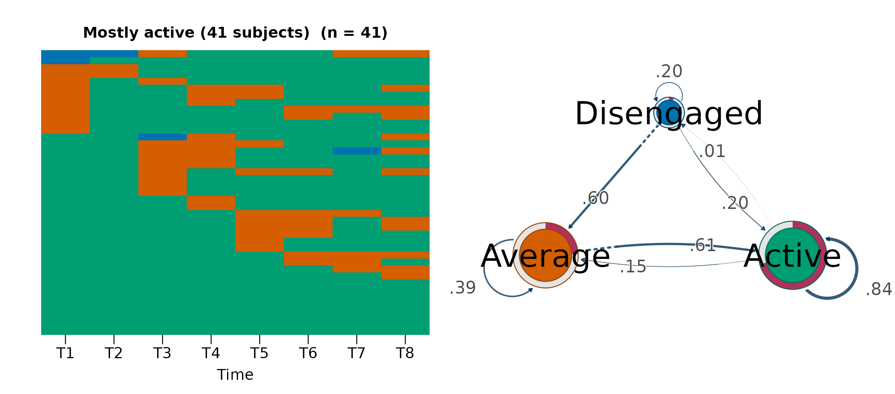
The pairing is what makes each panel legible. The left panel shows a green field with orange interruptions, and the right explains its shape: Active retains 0.84 of its members from one position to the next, and the only substantial route out of it leads to Average rather than to Disengaged, whose node is barely present. Reading either panel alone would leave the other half of that statement unsupported.
sequences also accepts "heatmap" or
"distribution" for the left panel, and the argument changes
only the layout — the centralities are identical either way.
transition_plot(fit, sequences = TRUE, group = "Mostly disengaged")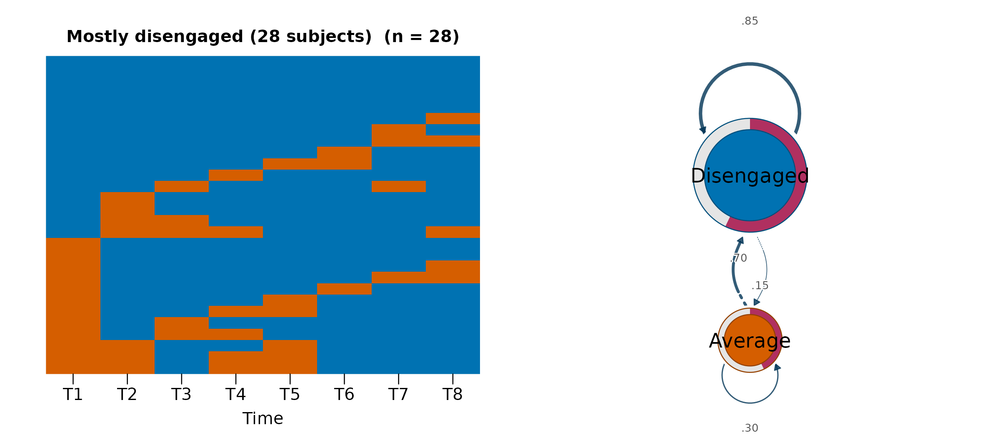
Where flow plots fit
The package keeps two rendering paths, and each owns a distinct question. Nestimate renders the sequence views — heatmap, index, and distribution — which are all organised by subject similarity or composition, and it also builds the transition network and its centralities. cograph draws the movement views: the flow diagrams, organised by movement between consecutive times, and the transition network, which discards timing altogether.
The three answers compose. The distribution establishes that the composition is stable; the alluvial establishes that the stability is an equilibrium rather than an absence of change; and the transition network puts a number on where that exchange concentrates. None of the three is a substitute for the others, and the first on its own is the one most easily misread.
Method overview: VaSSTra chapter.